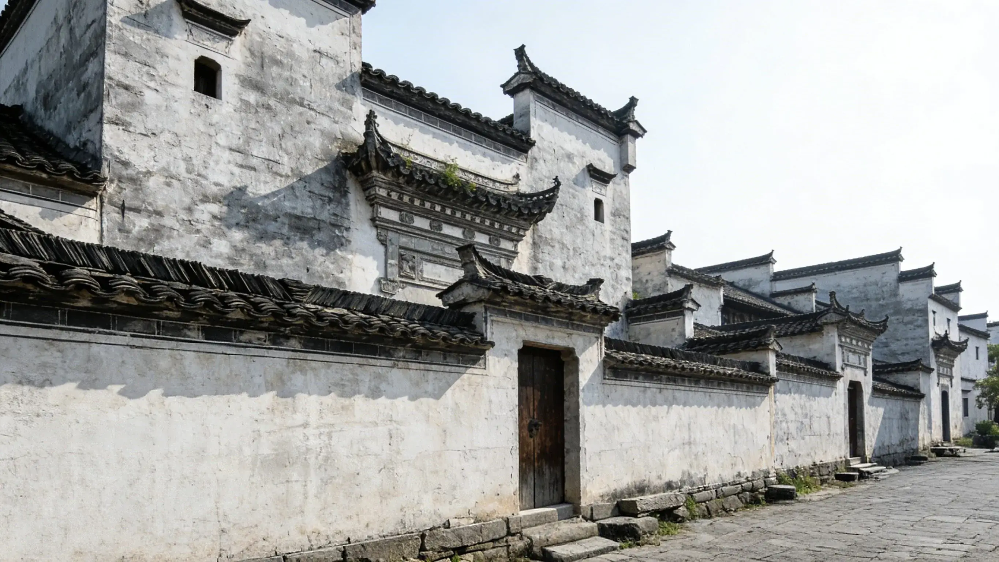
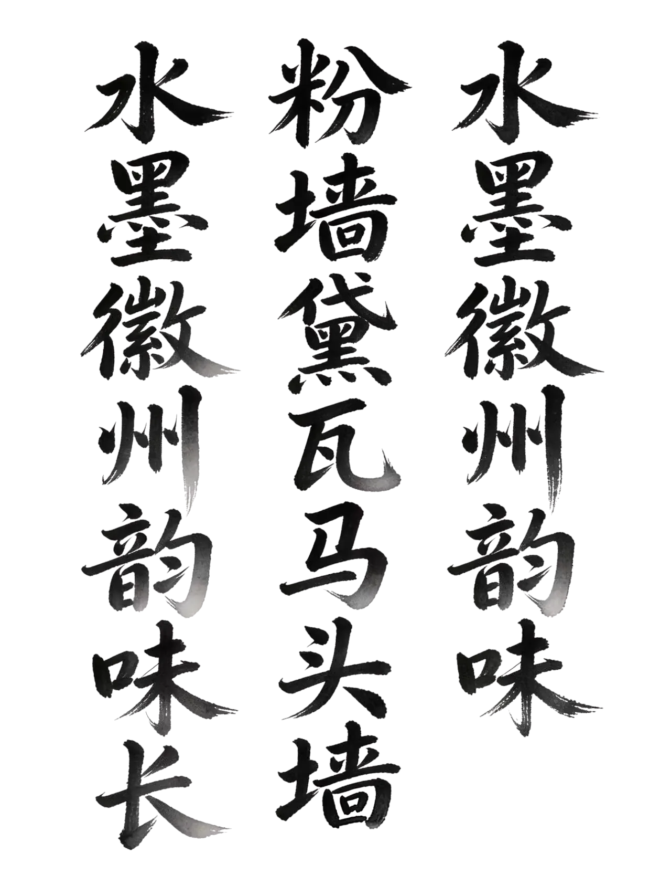

木雕 · 渔樵耕读


选择左侧构件，查看对应的实拍图与拆解示意图


具体位置：宏村西北侧，源自黄山余脉羊栈岭山涧溪流。
水流方向：自西北向东南，贯穿整个村落。
核心功能：水源供给、水流调控、水质净化。
营造特点：位于高处，依地势生态自流，无需人工动力。

具体位置：沿宏村街巷蜿蜒，分流至家家户户门前。
水流方向：自西北向东南，分支环绕民居院落。
核心功能：生活用水、消防用水、降温调湿、灌溉用水。
营造特点：宽约1米、深0.5-0.8米，青石砌筑、底铺鹅卵石，上游饮用下游洗涤。

具体位置：宏村中心，汪氏宗祠北侧。
水流方向：主水圳汇入，蓄水后向南流出至南湖。
核心功能：蓄水调流、生活核心、风水核心、消防储备。
营造特点：半月形青石围砌，体现“月盈则亏、凡事有余”的徽州哲学。

具体位置：宏村南侧，村落末端。
水流方向：月沼出水汇入南湖，多余水流外排农田。
核心功能：总蓄水、灌溉、景观休闲、防洪排涝、生态净化。
营造特点：弧形大水面，南湖书院与石拱桥相映，水利与人文景观高度融合。
具体位置：街巷与民居天井下方，隐蔽式全程暗沟。
水流方向：自北向南，与地表水同向，汇入南湖。
核心功能：排污排水、防涝防潮、水质保护（雨污分流）。
营造特点：青石砌筑，不占地面空间，数百年运行仍通畅。


点击上方维度，查看皖南民居、北京四合院、福建土楼在同一维度下的格局、营造、功能与文化差异，并结合代表建筑与地理分布进行横向理解。